<!DOCTYPE html>
<html><head><title>09. GPU Architectures</title><meta charSet="utf-8"/><meta name="viewport" content="width=device-width, initial-scale=1.0"/><meta property="og:title" content="09. GPU Architectures"/><meta property="og:description" content="서울대학교 컴퓨터공학과 이재진 교수님의 &amp;quot;확장형 고성능 컴퓨팅&amp;quot; 강의를 필기한 내용입니다. 목차 Performance factors for HW § Key performance factors Parallelism: 한번에 몇개의 연산을 같이 하느냐 Frequency: 1 clock 이 얼마나 빠른지 (speed) Memory bandwidth: 한번에 데이터를 얼마나 가져올 수 있는지 Memory latency: Memory bandwidth 에서의 “한번” 이 얼마나 빠른지 이 factor 들 중에서 집중하는 factor 들은 workload 에 따라 달라진다."/><meta property="og:image" content="https://mdg.haeramk.im/static/og-image.png"/><meta property="og:width" content="1200"/><meta property="og:height" content="675"/><link rel="icon" href="../../../../../static/icon.png"/><meta name="description" content="서울대학교 컴퓨터공학과 이재진 교수님의 &amp;quot;확장형 고성능 컴퓨팅&amp;quot; 강의를 필기한 내용입니다. 목차 Performance factors for HW § Key performance factors Parallelism: 한번에 몇개의 연산을 같이 하느냐 Frequency: 1 clock 이 얼마나 빠른지 (speed) Memory bandwidth: 한번에 데이터를 얼마나 가져올 수 있는지 Memory latency: Memory bandwidth 에서의 “한번” 이 얼마나 빠른지 이 factor 들 중에서 집중하는 factor 들은 workload 에 따라 달라진다."/><meta name="generator" content="Quartz"/><link rel="preconnect" href="https://fonts.googleapis.com"/><link rel="preconnect" href="https://fonts.gstatic.com"/><link href="../../../../../index.css" rel="stylesheet" type="text/css" spa-preserve/><link href="https://cdn.jsdelivr.net/npm/katex@0.16.0/dist/katex.min.css" rel="stylesheet" type="text/css" spa-preserve/><link href="https://fonts.googleapis.com/css2?family=IBM Plex Mono&amp;family=Gowun Batang:wght@400;700&amp;family=Gowun Dodum:ital,wght@0,400;0,600;1,400;1,600&amp;display=swap" rel="stylesheet" type="text/css" spa-preserve/><script src="../../../../../prescript.js" type="application/javascript" spa-preserve></script><script type="application/javascript" spa-preserve>const fetchData = fetch(`../../../../../static/contentIndex.json`).then(data => data.json())</script></head><body data-slug="gardens/arch/originals/shpc.fall.2024.cse.snu.ac.kr/lectures/09.-GPU-Architectures"><div id="quartz-root" class="page"><div id="quartz-body"><div class="left sidebar"><h1 class="page-title "><a href="../../../../..">Madison Digital Garden</a></h1><div class="spacer mobile-only"></div><div class="search "><div id="search-icon"><p>Search</p><div></div><svg tabIndex="0" aria-labelledby="title desc" role="img" xmlns="http://www.w3.org/2000/svg" viewBox="0 0 19.9 19.7"><title id="title">Search</title><desc id="desc">Search</desc><g class="search-path" fill="none"><path stroke-linecap="square" d="M18.5 18.3l-5.4-5.4"></path><circle cx="8" cy="8" r="7"></circle></g></svg></div><div id="search-container"><div id="search-space"><input autocomplete="off" id="search-bar" name="search" type="text" aria-label="Search for something" placeholder="Search for something"/><div id="results-container"></div></div></div></div><div class="darkmode "><input class="toggle" id="darkmode-toggle" type="checkbox" tabIndex="-1"/><label id="toggle-label-light" for="darkmode-toggle" tabIndex="-1"><svg xmlns="http://www.w3.org/2000/svg" xmlnsXlink="http://www.w3.org/1999/xlink" version="1.1" id="dayIcon" x="0px" y="0px" viewBox="0 0 35 35" style="enable-background:new 0 0 35 35;" xmlSpace="preserve"><title>Light mode</title><path d="M6,17.5C6,16.672,5.328,16,4.5,16h-3C0.672,16,0,16.672,0,17.5    S0.672,19,1.5,19h3C5.328,19,6,18.328,6,17.5z M7.5,26c-0.414,0-0.789,0.168-1.061,0.439l-2,2C4.168,28.711,4,29.086,4,29.5    C4,30.328,4.671,31,5.5,31c0.414,0,0.789-0.168,1.06-0.44l2-2C8.832,28.289,9,27.914,9,27.5C9,26.672,8.329,26,7.5,26z M17.5,6    C18.329,6,19,5.328,19,4.5v-3C19,0.672,18.329,0,17.5,0S16,0.672,16,1.5v3C16,5.328,16.671,6,17.5,6z M27.5,9    c0.414,0,0.789-0.168,1.06-0.439l2-2C30.832,6.289,31,5.914,31,5.5C31,4.672,30.329,4,29.5,4c-0.414,0-0.789,0.168-1.061,0.44    l-2,2C26.168,6.711,26,7.086,26,7.5C26,8.328,26.671,9,27.5,9z M6.439,8.561C6.711,8.832,7.086,9,7.5,9C8.328,9,9,8.328,9,7.5    c0-0.414-0.168-0.789-0.439-1.061l-2-2C6.289,4.168,5.914,4,5.5,4C4.672,4,4,4.672,4,5.5c0,0.414,0.168,0.789,0.439,1.06    L6.439,8.561z M33.5,16h-3c-0.828,0-1.5,0.672-1.5,1.5s0.672,1.5,1.5,1.5h3c0.828,0,1.5-0.672,1.5-1.5S34.328,16,33.5,16z     M28.561,26.439C28.289,26.168,27.914,26,27.5,26c-0.828,0-1.5,0.672-1.5,1.5c0,0.414,0.168,0.789,0.439,1.06l2,2    C28.711,30.832,29.086,31,29.5,31c0.828,0,1.5-0.672,1.5-1.5c0-0.414-0.168-0.789-0.439-1.061L28.561,26.439z M17.5,29    c-0.829,0-1.5,0.672-1.5,1.5v3c0,0.828,0.671,1.5,1.5,1.5s1.5-0.672,1.5-1.5v-3C19,29.672,18.329,29,17.5,29z M17.5,7    C11.71,7,7,11.71,7,17.5S11.71,28,17.5,28S28,23.29,28,17.5S23.29,7,17.5,7z M17.5,25c-4.136,0-7.5-3.364-7.5-7.5    c0-4.136,3.364-7.5,7.5-7.5c4.136,0,7.5,3.364,7.5,7.5C25,21.636,21.636,25,17.5,25z"></path></svg></label><label id="toggle-label-dark" for="darkmode-toggle" tabIndex="-1"><svg xmlns="http://www.w3.org/2000/svg" xmlnsXlink="http://www.w3.org/1999/xlink" version="1.1" id="nightIcon" x="0px" y="0px" viewBox="0 0 100 100" style="enable-background='new 0 0 100 100'" xmlSpace="preserve"><title>Dark mode</title><path d="M96.76,66.458c-0.853-0.852-2.15-1.064-3.23-0.534c-6.063,2.991-12.858,4.571-19.655,4.571  C62.022,70.495,50.88,65.88,42.5,57.5C29.043,44.043,25.658,23.536,34.076,6.47c0.532-1.08,0.318-2.379-0.534-3.23  c-0.851-0.852-2.15-1.064-3.23-0.534c-4.918,2.427-9.375,5.619-13.246,9.491c-9.447,9.447-14.65,22.008-14.65,35.369  c0,13.36,5.203,25.921,14.65,35.368s22.008,14.65,35.368,14.65c13.361,0,25.921-5.203,35.369-14.65  c3.872-3.871,7.064-8.328,9.491-13.246C97.826,68.608,97.611,67.309,96.76,66.458z"></path></svg></label></div></div><div class="center"><div class="page-header"><div class="popover-hint"><h1 class="article-title ">09. GPU Architectures</h1><p class="content-meta ">Oct 07, 2024, 17 min read</p><ul class="tags "><li><a href="../../../../../tags/originals" class="internal tag-link">#originals</a></li><li><a href="../../../../../tags/snu-shpc24f" class="internal tag-link">#snu-shpc24f</a></li></ul></div></div><article class="popover-hint"><blockquote class="callout" data-callout="info">
<div class="callout-title">
                  <div class="callout-icon"><svg xmlns="http://www.w3.org/2000/svg" width="100%" height="100%" viewBox="0 0 24 24" fill="none" stroke="currentColor" stroke-width="2" stroke-linecap="round" stroke-linejoin="round"><circle cx="12" cy="12" r="10"></circle><line x1="12" y1="16" x2="12" y2="12"></line><line x1="12" y1="8" x2="12.01" y2="8"></line></svg></div>
                  <div class="callout-title-inner"><p>서울대학교 컴퓨터공학과 이재진 교수님의 &quot;확장형 고성능 컴퓨팅&quot; 강의를 필기한 내용입니다. </p></div>
                  
                </div>
<ul>
<li><a href="../../../../../gardens/arch/originals/shpc.fall.2024.cse.snu.ac.kr/(SNU-CSE)-Scalable-High-Performance-Computing" class="internal" data-slug="gardens/arch/originals/shpc.fall.2024.cse.snu.ac.kr/(SNU-CSE)-Scalable-High-Performance-Computing">목차</a></li>
</ul>
</blockquote>
<h2 id="performance-factors-for-hw">Performance factors for HW<a aria-hidden="true" tabindex="-1" href="#performance-factors-for-hw" class="internal"> §</a></h2>
<ul>
<li>Key performance factors
<ul>
<li><em>Parallelism</em>: 한번에 몇개의 연산을 같이 하느냐</li>
<li><em>Frequency</em>: 1 clock 이 얼마나 빠른지 (speed)</li>
<li><em>Memory bandwidth</em>: 한번에 데이터를 얼마나 가져올 수 있는지</li>
<li><em>Memory latency</em>: Memory bandwidth 에서의 “한번” 이 얼마나 빠른지</li>
</ul>
</li>
<li>이 factor 들 중에서 집중하는 factor 들은 workload 에 따라 달라진다.</li>
<li>각 factor 들을 향상시키는 방법은 architecture 에 따라 달라질 수 있다.</li>
<li>CPU 한테 저 factor 들을 적용해 보자.
<ul>
<li>Parallelism: CPU 에는 core 가 여러개고 (multicore) 각각 <a href="../../../../../gardens/arch/terms/Scalar,-Superscalar-Processing-(Arch)" class="internal" data-slug="gardens/arch/terms/Scalar,-Superscalar-Processing-(Arch)">ILP</a> 를 지원한다.</li>
<li>Frequency: 오래걸리는 <a href="../../../../../gardens/arch/originals/shpc.fall.2024.cse.snu.ac.kr/drafts/04/Instruction-(Arch)" class="internal" data-slug="gardens/arch/originals/shpc.fall.2024.cse.snu.ac.kr/drafts/04/Instruction-(Arch)">Instruction</a> 을 기준으로 frequency 가 설정되니까 이 오래걸리는 instruction 을 multi-step 으로 나눠서 frequency 를 올리는 방법을 해왔으나,
<ul>
<li>Power consumption (발열) 등의 문제로 이것을 올리는 데는 한계가 있다.</li>
</ul>
</li>
<li>Memory bandwidth: DDR 은 bandwidth 가 한정되어 있다.</li>
<li>Memory latency: DDR 은 latency 가 다소 길다.</li>
<li>Memory 쪽이 좀 부실해 보이긴 하지만,
<ul>
<li>어차피 CPU 의 freqency 를 올리는데는 한계가 있어서 CPU 의 속도 발전은 정체되어 있고 따라서 memory 와의 성능차이는 (비록 mem 발전속도가 느리긴 하지만) 점차 줄어들고 있다고 한다.</li>
<li>그리고 CPU 에는 cache 가 있으니까 이 부실함이 그렇게까지 critical 하지는 않다.</li>
</ul>
</li>
</ul>
</li>
</ul>
<h2 id="gpu-overview">GPU overview<a aria-hidden="true" tabindex="-1" href="#gpu-overview" class="internal"> §</a></h2>
<ul>
<li>일단 <a href="../../../../../gardens/arch/originals/shpc.fall.2024.cse.snu.ac.kr/drafts/09/Graphic-Processing-Unit,-GPU-(Arch)" class="internal" data-slug="gardens/arch/originals/shpc.fall.2024.cse.snu.ac.kr/drafts/09/Graphic-Processing-Unit,-GPU-(Arch)">Graphic Processing Unit (GPU)</a> 는 단순 연산을 아주 빠르게 하는 core 가 엄청 많이 (많게는 몇천개까지) 들어있는 장치이다.
<ul>
<li>생각해 보면 이미지는 하나의 큰 2차원 배열이고, 영상은 이것의 모음이기 때문에 이 배열을 계산하는 것이 graphic 처리의 시작과 끝일 것이다.</li>
</ul>
</li>
<li>특정 작업만 아주 빠르게 하는 HW 장치를 <a href="../../../../../gardens/arch/originals/shpc.fall.2024.cse.snu.ac.kr/drafts/01/Accelerator-(Arch)" class="internal" data-slug="gardens/arch/originals/shpc.fall.2024.cse.snu.ac.kr/drafts/01/Accelerator-(Arch)">Accelerator</a> 라고 하는데, 단순 연산이 아주 빠르다는 점에서 GPU 도 accelerator 에 속한다.</li>
<li>GPU 한테도 위에서의 performance factor 들을 적용해보면
<ul>
<li>Parallelism: 단순한 작업을 하는 core 가 매우 많게 구성된다.</li>
<li>Frequency: CPU 보다는 frequency 가 좀 낮긴 하다.
<ul>
<li>근데 parallelism 이 매우 커서 그다지 흠이 아니다.</li>
</ul>
</li>
<li>Memory bandwidth: HBM (High-bandwidth Memory) 를 사용해 아주 bandwidth 가 크다.</li>
<li>Memory latency: 이건 DDR 과 비슷하다고 하네
<ul>
<li>근데 HW multithreading 으로 이러한 latency 를 가린다고 한다 (<a href="../../../../../gardens/arch/originals/shpc.fall.2024.cse.snu.ac.kr/drafts/01/Communication-Computation-Overlapping,-Latency-Hiding-(Arch)" class="internal" data-slug="gardens/arch/originals/shpc.fall.2024.cse.snu.ac.kr/drafts/01/Communication-Computation-Overlapping,-Latency-Hiding-(Arch)">Latency hiding</a>)</li>
</ul>
</li>
</ul>
</li>
<li>여담으로 GPU 는 원래 게이밍 분야에서 발전해 왔지만, NVIDIA 를 필두로 복잡한 계산을 수행하는데 사용할 수 있도록 HPC 시장으로 확대되어 왔다고 한다.</li>
</ul>
<h2 id="rendering">Rendering<a aria-hidden="true" tabindex="-1" href="#rendering" class="internal"> §</a></h2>
<ul>
<li><a href="../../../../../gardens/arch/originals/shpc.fall.2024.cse.snu.ac.kr/drafts/09/Rendering-(Arch)" class="internal" data-slug="gardens/arch/originals/shpc.fall.2024.cse.snu.ac.kr/drafts/09/Rendering-(Arch)">Rendering</a>: 3D model 을 구성해 놓고, 그것을 2차원 이미지에 보는 방향에 따라 투사하는 것</li>
<li>여기서 <a href="../../../../../gardens/arch/originals/shpc.fall.2024.cse.snu.ac.kr/drafts/09/Rendering-(Arch)" class="internal" data-slug="gardens/arch/originals/shpc.fall.2024.cse.snu.ac.kr/drafts/09/Rendering-(Arch)">3D Model</a> 은 3차원의 객체의 표면을 수학적으로 표현하는 것이다.
<ul>
<li>그리고 이건 2차원 삼각형의 조합으로서 표현된다.</li>
</ul>
</li>
</ul>
<h2 id="shader">Shader<a aria-hidden="true" tabindex="-1" href="#shader" class="internal"> §</a></h2>
<ul>
<li>아래는 Rendering 의 과정 (pipeline) 이다.</li>
</ul>
<p>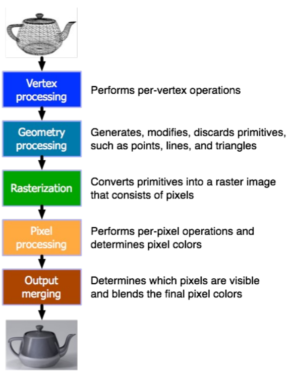</p>
<ul>
<li>3d rendering 하는 과정은 위와 같은데, 원래는 이 작업들이 각각의 accelerator 를 이용했다면</li>
<li>지금은 많은 작업들이 programmable 하다는 것이 알려저 general purpose computation unit (CPU) 로 수행해도 비슷한 성능을 낸다.</li>
<li>이때 <a href="../../../../../gardens/arch/originals/shpc.fall.2024.cse.snu.ac.kr/drafts/09/Shader-(Arch)" class="internal" data-slug="gardens/arch/originals/shpc.fall.2024.cse.snu.ac.kr/drafts/09/Shader-(Arch)">Shader</a> 라는 것은 GPU 에서 작동하며 위 pipeline 중 하나를 처리하는 프로그램을 일컫는다.</li>
</ul>
<h3 id="architecture-for-general-purpose-cpu">Architecture for general purpose CPU<a aria-hidden="true" tabindex="-1" href="#architecture-for-general-purpose-cpu" class="internal"> §</a></h3>
<p>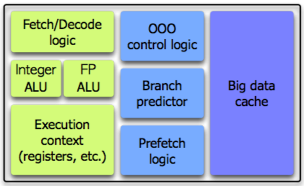</p>
<ul>
<li><a href="../../../../../gardens/arch/originals/shpc.fall.2024.cse.snu.ac.kr/drafts/09/Central-Processing-Unit,-CPU-(Arch)" class="internal" data-slug="gardens/arch/originals/shpc.fall.2024.cse.snu.ac.kr/drafts/09/Central-Processing-Unit,-CPU-(Arch)">CPU</a> 의 구조를 간단하게 보면 위와 같다.
<ul>
<li><a href="../../../../../gardens/arch/originals/shpc.fall.2024.cse.snu.ac.kr/drafts/04/Instruction-Cycle-(Arch-Instruction)" class="internal" data-slug="gardens/arch/originals/shpc.fall.2024.cse.snu.ac.kr/drafts/04/Instruction-Cycle-(Arch-Instruction)">IF</a> 와 <a href="../../../../../gardens/arch/originals/shpc.fall.2024.cse.snu.ac.kr/drafts/04/Instruction-Cycle-(Arch-Instruction)" class="internal" data-slug="gardens/arch/originals/shpc.fall.2024.cse.snu.ac.kr/drafts/04/Instruction-Cycle-(Arch-Instruction)">ID</a> 를 담당하는 Fetch, Decode logic</li>
<li><a href="../../../../../gardens/arch/originals/shpc.fall.2024.cse.snu.ac.kr/drafts/05/Arithmetic-Logic-Unit,-ALU-(Arch)" class="internal" data-slug="gardens/arch/originals/shpc.fall.2024.cse.snu.ac.kr/drafts/05/Arithmetic-Logic-Unit,-ALU-(Arch)">ALU</a> 들</li>
<li>Context 는 CPU 에서 사용할 저장공간 register (<a href="../../../../../gardens/arch/originals/shpc.fall.2024.cse.snu.ac.kr/drafts/06/Multithreaded-Processor-(Arch)" class="internal" data-slug="gardens/arch/originals/shpc.fall.2024.cse.snu.ac.kr/drafts/06/Multithreaded-Processor-(Arch)">Multithreading</a> 라면 이것도 여러개)</li>
<li>OOO controller 는 <a href="../../../../../gardens/arch/originals/shpc.fall.2024.cse.snu.ac.kr/drafts/05/Out-of-Order-Execution,-OoO-(Arch)" class="internal" data-slug="gardens/arch/originals/shpc.fall.2024.cse.snu.ac.kr/drafts/05/Out-of-Order-Execution,-OoO-(Arch)">OoO execution</a> 를 위한 reservation station, reorder buffer 등</li>
<li>그리고 나머지 <a href="../../../../../gardens/arch/originals/shpc.fall.2024.cse.snu.ac.kr/drafts/05/Control-Hazard-(Arch)" class="internal" data-slug="gardens/arch/originals/shpc.fall.2024.cse.snu.ac.kr/drafts/05/Control-Hazard-(Arch)">Branch predictor</a> 나 Prefetch logic, Big data cache 는 뭐 이름이 시사하는 바 그대로임</li>
</ul>
</li>
<li>참고로 어차피 transistor 밀도는 정해져 있기 때문에 (몇 나노 공정 등) CPU 크기가 크면 그만큼 복잡도도 커진다고 한다.</li>
</ul>
<h3 id="shader-core">Shader core<a aria-hidden="true" tabindex="-1" href="#shader-core" class="internal"> §</a></h3>
<ul>
<li>근데 shader 를 생각해 보면 triangle 의 pixel 을 계산하는데 이 계산이 복잡한 것도 아니고 단순히 많은 것 뿐이다.
<ul>
<li>Triangle 간의 data dependency 도 없다고 한다.</li>
</ul>
</li>
</ul>
<p>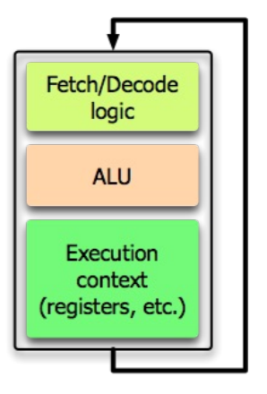</p>
<ul>
<li>그래서 위처럼 (1) Fetch, Decode logic (2) ALU, (3) Execution context 만 남기고 다 쳐내게 된다.</li>
</ul>
<p>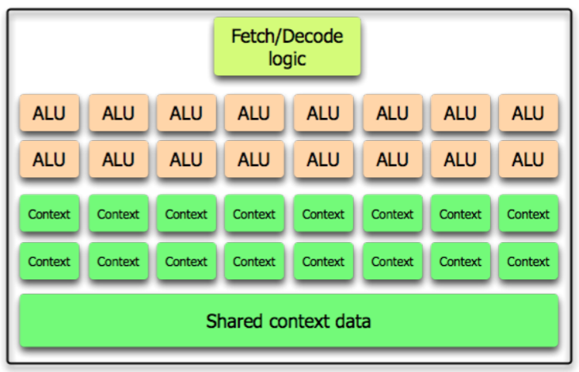</p>
<ul>
<li>여기서 share 할 수 있는 것들을 보아보면 위처럼 되고, 이것이 GPU 의 기본적인 구조
<ul>
<li>하나의 instruction stream 을 빠르게 해주는 요사스러운 것은 다 빼고</li>
<li>무적권 parallel processing 으로만 승부보는 것.</li>
</ul>
</li>
<li>여기서 Fetch, Decode logic 이 1개라는 것은 <a href="../../../../../gardens/arch/terms/Program-Counter,-PC-(Arch)" class="internal" data-slug="gardens/arch/terms/Program-Counter,-PC-(Arch)">PC</a> 가 1개고, 이 instruction 를 모든 ALU 가 실행한다는 것이다.
<ul>
<li>즉, 동일한 instruction 에 데이터만 바꿔서 (각각 ALU 에서 처리될 데이터는 Execution context 에 있겠지) 한번에 저만큼을 쫙쫙 계산하는 것.</li>
<li>따라서 SIMD 라고 할 수 있는데, NVIDIA 에서는 이 용어 말고 (아무래도 <a href="../../../../../gardens/arch/terms/Single-Instruction-Multiple-Data,-SIMD-(Arch)" class="internal" data-slug="gardens/arch/terms/Single-Instruction-Multiple-Data,-SIMD-(Arch)">SIMD</a> 는 보통 CPU <a href="../../../../../gardens/arch/drafts/Instruction-Set-Architecture,-ISA-(Arch)" class="internal" data-slug="gardens/arch/drafts/Instruction-Set-Architecture,-ISA-(Arch)">ISA</a> 를 의미하니깐) <em>Single Instruction, Multiple Threads</em> (<em>SIMT</em>) 라고 한다.</li>
<li>여기서 thread 는 너가 생각하는 <a href="../../../../../gardens/os/process/drafts/Thread-(Process)" class="internal" data-slug="gardens/os/process/drafts/Thread-(Process)">Thread</a> 와 비슷하면서 좀 다르다. 이건 바로 뒤에 설명함</li>
</ul>
</li>
<li>여기에서 rendering pipeline 을 하나하나 처리하게 되는데, 따라서 pipeline 마다 GPU 를 방문하게 된다.
<ul>
<li>이런 것을 <em>Logical graphics pipeline</em> 이라고 한다.</li>
</ul>
</li>
</ul>
<h3 id="thread-warp">Thread, Warp<a aria-hidden="true" tabindex="-1" href="#thread-warp" class="internal"> §</a></h3>
<ul>
<li>약간 NVIDIA-specific 용어인거같은데</li>
<li><em><a href="../../../../../gardens/arch/originals/shpc.fall.2024.cse.snu.ac.kr/drafts/09/Graphic-Processing-Unit,-GPU-(Arch)" class="internal" data-slug="gardens/arch/originals/shpc.fall.2024.cse.snu.ac.kr/drafts/09/Graphic-Processing-Unit,-GPU-(Arch)">Thread</a></em> 는 하나의 IF-ID-EX 단위로 GPU 내의 ALU 하나하나라고 생각하면 된다.
<ul>
<li>IF-ID-EX 가 하나의 “실행 흐름” 이기 때문에 <em>Thread</em> 라고 이름붙여진 것.</li>
</ul>
</li>
<li>그리고 이놈을 묶어서 하나의 Fetch-Decode logic 에 따라 움직이는 <em>Thread</em> 들을 <em><a href="../../../../../gardens/arch/originals/shpc.fall.2024.cse.snu.ac.kr/drafts/09/Graphic-Processing-Unit,-GPU-(Arch)" class="internal" data-slug="gardens/arch/originals/shpc.fall.2024.cse.snu.ac.kr/drafts/09/Graphic-Processing-Unit,-GPU-(Arch)">Warp</a></em> 라고 한다.</li>
</ul>
<h2 id="predicated-execution">Predicated execution<a aria-hidden="true" tabindex="-1" href="#predicated-execution" class="internal"> §</a></h2>
<ul>
<li>Predicated execution 은 GPU 에서 조건문 처리하는 방법인데, 무식하게 한다: 모든 조건들을 다 계산하고, 맞는 조건만 살리는 것.
<ul>
<li>Branch divergence 라고도 부른다.</li>
</ul>
</li>
<li>즉, if-else 에서 if 인 경우와 else 인 경우를 모두 parallel 하게 계산하고, 나중에 if branch 가 맞다는 것이 밣혀지만 else 인 경우를 버린다</li>
<li>근데 딱 봐도 overhead 가 커보인다: 그래서 GPU 를 쓸 때는 branch 를 줄이는 것이 좋다
<ul>
<li>다만 무조건 한쪽으로만 branch 되는 경우에는 예외.</li>
</ul>
</li>
</ul>
<h2 id="context-switch">Context switch<a aria-hidden="true" tabindex="-1" href="#context-switch" class="internal"> §</a></h2>
<p>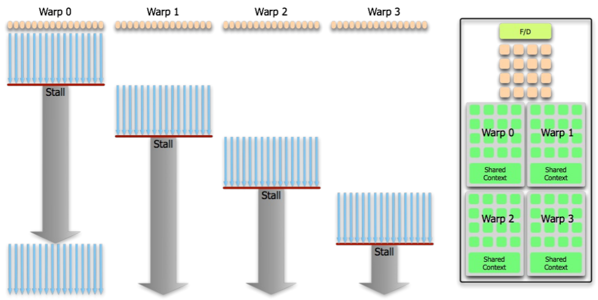</p>
<ul>
<li>CPU 에서는 context switch 를 할 때는 register-memory 간의 저장-복구 작업이 수행되는데</li>
<li>근데 gpu 에서는 warp 가 사용할 execution context 를 여러벌 만들어서 이 overhead 를 줄인다.
<ul>
<li>즉, context + shared context 를 여러벌 만들고 (= context pool) context switch 할 때 그냥 다른 context 를 사용하기만 하면 되는 방식</li>
<li>위 경우에는 이 context 가 4벌있는 것</li>
<li>Warp 가 실행되다가 stall 이 되면 다른 warp 로 switch 되고, 이때는 data 이동 없이 그냥 contex pool 의 다른 context 를 사용하기만 하면 된다.</li>
</ul>
</li>
<li>GPU 에서는 이런 구조로 인해 stall 이 되면 그냥 다른 context 로 갈아껴서 계속 연산을 진행한다.
<ul>
<li>따라서 context switch 를 해줄 OS 가 따로 필요 없고, <a href="../../../../../gardens/os/process/drafts/Time-Sharing-System-(Process)" class="internal" data-slug="gardens/os/process/drafts/Time-Sharing-System-(Process)">time shared</a> 도 아니다.</li>
</ul>
</li>
<li>따라서 지원하는 warp 의 개수는 HW 적으로 fixed 되어 있다.
<ul>
<li>참고로 필요한 register 사이즈에 따라 올리는 warp 는 달라질 수 있다고 한다.</li>
</ul>
</li>
</ul>
<h2 id="streaming-multiprocessor-sm">Streaming Multiprocessor, SM<a aria-hidden="true" tabindex="-1" href="#streaming-multiprocessor-sm" class="internal"> §</a></h2>
<p>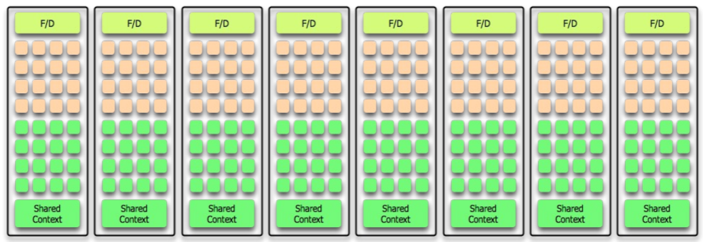</p>
<ul>
<li>저런 (Fetch-Decode logic, ALU 들, context 들) 을 묶어서 (NVIDIA 에서는) <a href="../../../../../gardens/arch/originals/shpc.fall.2024.cse.snu.ac.kr/drafts/09/Streaming-Multiprocessor,-SM-(Arch)" class="internal" data-slug="gardens/arch/originals/shpc.fall.2024.cse.snu.ac.kr/drafts/09/Streaming-Multiprocessor,-SM-(Arch)">Streaming Multiprocessor (SM)</a> 라고 하고, 위 그림처럼 이 SM 을 여러개 사용하는 방식을 사용</li>
<li>참고) cosine, sine 계산은 수학적으로는 <a href="https://en.wikipedia.org/wiki/Taylor_series" class="external">Taylor series</a> 으로 할 수 있고, GPU 에서는 이것들을 미리 pre-calculation 해놓고 그냥 table lookup 을 한다고 한다.</li>
</ul>
<p>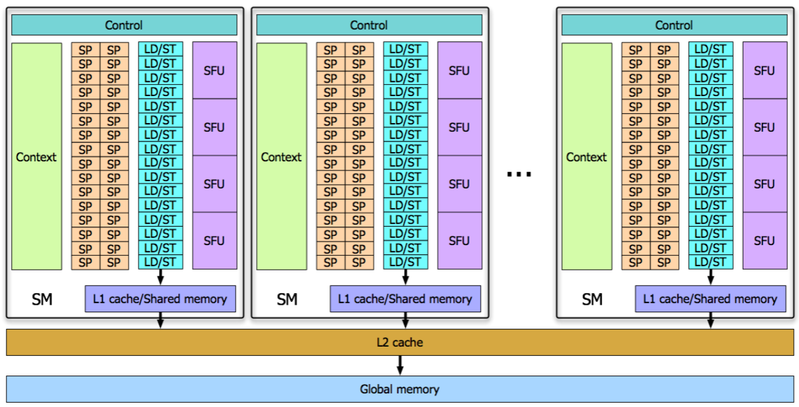</p>
<ul>
<li>그래서 현대의 GPU 들은 위와 같은 형상을 띈다고 한다.
<ul>
<li>저기서 SP 는 Scalar Processor 로, 그냥 ALU 의 묶음이라고 생각하면 된다.</li>
<li>그리고 LD-ST 는 Load-Store unit 이다. 말 그대로 memory 접근하는 놈</li>
<li>마지막으로 SFU 는 Special Function Unit 이다. 뭐 특별한 일 하나봄.</li>
</ul>
</li>
</ul>
<h2 id="gpu-summary">GPU Summary<a aria-hidden="true" tabindex="-1" href="#gpu-summary" class="internal"> §</a></h2>
<ul>
<li>하나의 instruction 을 많은 ALU 가 동시에 실행하고 있다는 점에서 SIMD 와 유사하다.</li>
<li>Thread 간 sync 를 맞추는 기능은 (거의) 제공하지 않음: 왜냐면 shading 연산에서는 그럴 일이 별로 없었기 떄문에: 따라서 이런 sync 를 맞춰야 하는 코드를 작성하지 않는 것이 좋다.</li>
</ul>
<h2 id="direct-memory-access-dma">Direct Memory Access (DMA)<a aria-hidden="true" tabindex="-1" href="#direct-memory-access-dma" class="internal"> §</a></h2>
<p>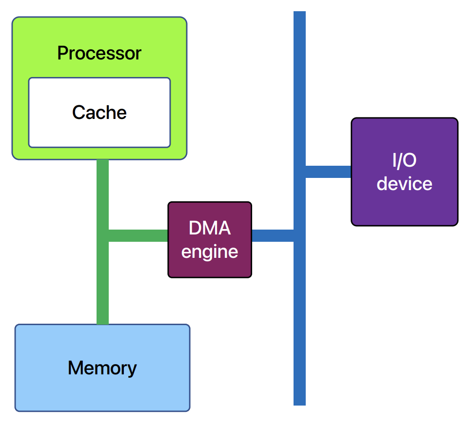</p>
<ul>
<li><a href="../../../../../gardens/os/io/terms/Direct-Memory-Access,-DMA-(OS)" class="internal" data-slug="gardens/os/io/terms/Direct-Memory-Access,-DMA-(OS)">DMA</a> 가 뭔지는 알제? Memory access 해주는 HW</li>
<li>뭐 IO 이후에 메모리에 올리는 것을 cpu 가 하는게 아니고 dma 가 하며 이것이 끝난 다음에 interrupt 거는 시스템</li>
<li>대충 작동 과정은 다음과 같다:
<ol>
<li>일단 CPU 가 memory 의 한 곳에 DMA command 를 적는다.
<ul>
<li>여기에는 뭐 memory 의 어느 주소부터 몇 byte 를 적어라 그런게 담긴다.</li>
</ul>
</li>
<li>그리고 DMA 에다가 적은 DMA command 의 memory 주소를 보낸다.</li>
<li>그럼 DMA controller 가 여기로 가 command 를 읽고, 처리한다.</li>
<li>처리가 완료되면 DMA controller 는 CPU 에 다 됐다고 interrupt 를 건다.</li>
</ol>
</li>
</ul>
<h3 id="dma-cache-coherence">DMA cache coherence<a aria-hidden="true" tabindex="-1" href="#dma-cache-coherence" class="internal"> §</a></h3>
<ul>
<li>위에서 알 수 있다 시피, memory 에 적힌 내용은 DMA 가 볼 수 있다. 근데 문제는 CPU 는 memory 에 바로 적지 않을 수도 있다는 것.</li>
<li>즉, processor 가 cache 로 가져간 값이랑 dma 가 올린 값이랑 타이밍이 안맞으면 이들이 차이가 생기게 된다.
<ul>
<li>가령 cache 로 올린 다음에 memory 에 dma 한 경우</li>
<li>이러한 문제는 memory (DMA) 와 cache 간에 sync 가 맞지 않는 경우이므로 DMA cache coherence 라고 부른다.</li>
</ul>
</li>
<li>이걸 해결하는 것은
<ul>
<li>cache flush 를 하거나</li>
<li>caching 을 비활성화하던가 (C 에서 <code>volatile</code>)</li>
</ul>
</li>
</ul>
<h2 id="remote-direct-memory-access-rdma">Remote Direct Memory Access (RDMA)<a aria-hidden="true" tabindex="-1" href="#remote-direct-memory-access-rdma" class="internal"> §</a></h2>
<p>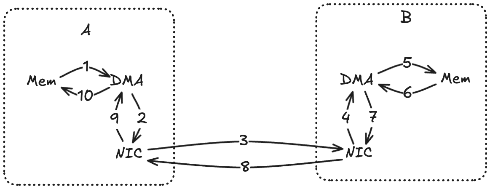</p>
<ul>
<li><a href="../../../../../gardens/arch/originals/shpc.fall.2024.cse.snu.ac.kr/drafts/09/Remote-Direct-Memory-Access,-RDMA-(Arch)" class="internal" data-slug="gardens/arch/originals/shpc.fall.2024.cse.snu.ac.kr/drafts/09/Remote-Direct-Memory-Access,-RDMA-(Arch)">RDMA</a> Network 를 통해 remote node 의 memory 에 바로 접근하겠다는 아이디어이다.
<ul>
<li>Host A 의 NIC 는 요청을 host B 의 NIC 로 보내고</li>
<li>Host B 의 NIC 는 host B 의 NIC 를 통해 host B 의 DMA 에 접근해 그쪽의 memory 에 있는 데이터를 읽거나 쓴 후</li>
<li>그 결과를 host B 의 NIC 에서 host A 의 NIC 로 받아, host A 의 DMA 에게 알려 host A 의 memory 에 쓰게 한다.</li>
</ul>
</li>
<li>이렇게 하면 remote 의 OS 개입을 최소화하게 된다.
<ul>
<li>그리고 data copy 도 줄일 수 있다.</li>
</ul>
</li>
<li>이게 뭔소리냐: 원래 remote node 의 memory 에 접근하려면 다음과 같은 stack 을 탔어야 했는데</li>
</ul>
<p>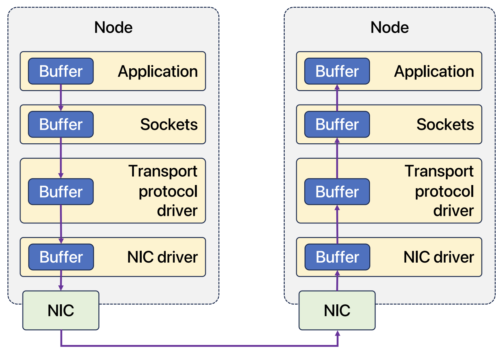</p>
<ul>
<li>이제는 이렇게 할 수 있는 것.</li>
</ul>
<p>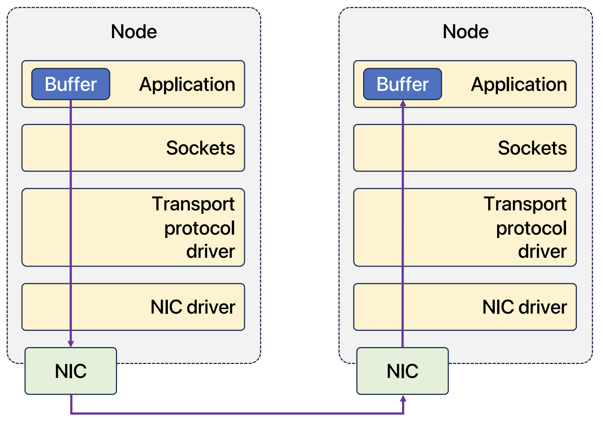</p>
<ul>
<li>이것은 single side communication 이다: 즉, local 에서 remote 로 일방적으로 보내는 거고 remote 의 OS 는 이것을 인지하지 못한다.</li>
<li>이 기술은 보통 infiniband 와 같은 아주 빠른 네트워크 환경에서 사용할 수 있다고 한다.</li>
</ul>
<h2 id="gpu-direct">GPU Direct<a aria-hidden="true" tabindex="-1" href="#gpu-direct" class="internal"> §</a></h2>
<ul>
<li>GPU 가 누군가와 통신하려면 원래는 CPU 의 memory 를 통해야 했는데 (즉, main memory 를 bounce buffer 로 삼는 것) 이것을 GPU 에서 바로 접근하게 해주는 것이 <a href="../../../../../gardens/arch/originals/shpc.fall.2024.cse.snu.ac.kr/drafts/09/GPU-Direct-(Arch)" class="internal" data-slug="gardens/arch/originals/shpc.fall.2024.cse.snu.ac.kr/drafts/09/GPU-Direct-(Arch)">GPU Direct</a> 이다.
<ul>
<li>즉, DMA 를 통해서 주변장치끼리 통신하는 것을 통칭하는 것.</li>
</ul>
</li>
<li>가령 GPU 끼리 서로의 메모리에 접근한다던가</li>
</ul>
<p>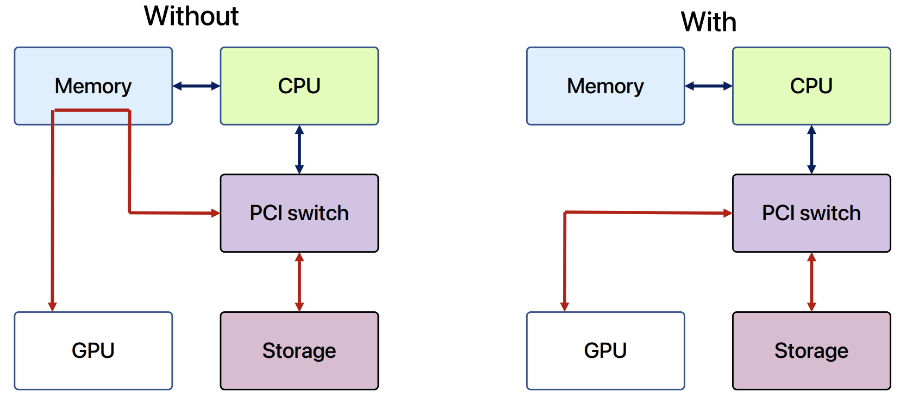</p>
<ul>
<li>위 그림처럼 DMA 가 storage 가 보낸 데이터를 main memory 가 아닌 GPU memory 로 보내도록 한다던가 (GPU Direct Storage)</li>
</ul>
<p>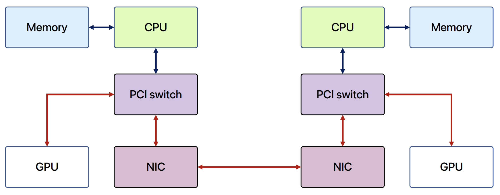</p>
<ul>
<li>아니면 다른 node 의 main memory 및 GPU memory 에 RDMA 로 접근한다던가 (GPU Direct RDMA)</li>
<li>… 할 수 있다.</li>
</ul>
<h2 id="collective-communication-library-ccl">Collective Communication Library (CCL)<a aria-hidden="true" tabindex="-1" href="#collective-communication-library-ccl" class="internal"> §</a></h2>
<blockquote class="callout" data-callout="info">
<div class="callout-title">
                  <div class="callout-icon"><svg xmlns="http://www.w3.org/2000/svg" width="100%" height="100%" viewBox="0 0 24 24" fill="none" stroke="currentColor" stroke-width="2" stroke-linecap="round" stroke-linejoin="round"><circle cx="12" cy="12" r="10"></circle><line x1="12" y1="16" x2="12" y2="12"></line><line x1="12" y1="8" x2="12.01" y2="8"></line></svg></div>
                  <div class="callout-title-inner"><p>여기부터는 <code>2024-10-09</code> 강의임</p></div>
                  
                </div>
</blockquote>
<ul>
<li>통신을 할 때, 딱 누구를 지정해서 통신 (point-to-point) 할 수도 있지만</li>
<li>Broadcast 를 해야 할 일도 있을 것이다.</li>
<li>GPU 에서 이런 기능을 제공하는 library 가 <a href="../../../../../gardens/arch/originals/shpc.fall.2024.cse.snu.ac.kr/drafts/09/Collective-Communication-Library,-CCL-(Arch)" class="internal" data-slug="gardens/arch/originals/shpc.fall.2024.cse.snu.ac.kr/drafts/09/Collective-Communication-Library,-CCL-(Arch)">Collective Communication Library (CCL)</a> 이다.
<ul>
<li>물론 point-to-point 로도 구현이 가능하지만, 너무 비효율적이어서 새로 만들어 library 로 만들었다고 한다.</li>
</ul>
</li>
<li>기존에 CPU 간의 통신을 위해 만든 것이 MPI (Message Passing Interface) CCL 이었고, 이것을 GPU 에서 사용하기 위해 바꾼 것이 NVCCL (NVIDIA), MSCCL (Microsoft), RCCL (AMD) 등이다.</li>
<li>여기에는 <a href="../../../../../gardens/arch/originals/shpc.fall.2024.cse.snu.ac.kr/drafts/09/Collective-Communication-Library,-CCL-(Arch)" class="internal" data-slug="gardens/arch/originals/shpc.fall.2024.cse.snu.ac.kr/drafts/09/Collective-Communication-Library,-CCL-(Arch)">Broadcast</a>, <a href="../../../../../gardens/arch/originals/shpc.fall.2024.cse.snu.ac.kr/drafts/09/Collective-Communication-Library,-CCL-(Arch)" class="internal" data-slug="gardens/arch/originals/shpc.fall.2024.cse.snu.ac.kr/drafts/09/Collective-Communication-Library,-CCL-(Arch)">Scatter</a>, <a href="../../../../../gardens/arch/originals/shpc.fall.2024.cse.snu.ac.kr/drafts/09/Collective-Communication-Library,-CCL-(Arch)" class="internal" data-slug="gardens/arch/originals/shpc.fall.2024.cse.snu.ac.kr/drafts/09/Collective-Communication-Library,-CCL-(Arch)">Gather</a>, <a href="../../../../../gardens/arch/originals/shpc.fall.2024.cse.snu.ac.kr/drafts/09/Collective-Communication-Library,-CCL-(Arch)" class="internal" data-slug="gardens/arch/originals/shpc.fall.2024.cse.snu.ac.kr/drafts/09/Collective-Communication-Library,-CCL-(Arch)">All-Gather</a>, <a href="../../../../../gardens/arch/originals/shpc.fall.2024.cse.snu.ac.kr/drafts/09/Collective-Communication-Library,-CCL-(Arch)" class="internal" data-slug="gardens/arch/originals/shpc.fall.2024.cse.snu.ac.kr/drafts/09/Collective-Communication-Library,-CCL-(Arch)">All-to-All</a>, <a href="../../../../../gardens/arch/originals/shpc.fall.2024.cse.snu.ac.kr/drafts/09/Collective-Communication-Library,-CCL-(Arch)" class="internal" data-slug="gardens/arch/originals/shpc.fall.2024.cse.snu.ac.kr/drafts/09/Collective-Communication-Library,-CCL-(Arch)">Reduce</a>, <a href="../../../../../gardens/arch/originals/shpc.fall.2024.cse.snu.ac.kr/drafts/09/Collective-Communication-Library,-CCL-(Arch)" class="internal" data-slug="gardens/arch/originals/shpc.fall.2024.cse.snu.ac.kr/drafts/09/Collective-Communication-Library,-CCL-(Arch)">All-Reduce</a> 가 있다고 한다.</li>
<li>GPU Direct 를 사용하여 구현되어 있고, remote node 일 시에는 RDMA 를 사용한다고 한다.</li>
</ul>
<blockquote class="callout" data-callout="tip">
<div class="callout-title">
                  <div class="callout-icon"><svg xmlns="http://www.w3.org/2000/svg" width="100%" height="100%" viewBox="0 0 24 24" fill="none" stroke="currentColor" stroke-width="2" stroke-linecap="round" stroke-linejoin="round"><path d="M8.5 14.5A2.5 2.5 0 0 0 11 12c0-1.38-.5-2-1-3-1.072-2.143-.224-4.054 2-6 .5 2.5 2 4.9 4 6.5 2 1.6 3 3.5 3 5.5a7 7 0 1 1-14 0c0-1.153.433-2.294 1-3a2.5 2.5 0 0 0 2.5 2.5z"></path></svg></div>
                  <div class="callout-title-inner"><p>깨알 홍보 </p></div>
                  
                </div>
<ul>
<li>이재진 교수님 랩이 만든 <a href="https://github.com/mcrl/tccl" class="external">Thunder CCL (TCCL)</a> 도 있다고 한다.
<ul>
<li>NVCCL 에서는 NVIDIA 에 특화된 NVLink 라는 통신을 사용하는데,</li>
<li>보통은 PCIe 를 사용하니까 이것을 위해 커스터마이징한 것이 TCCL 이랜다.</li>
</ul>
</li>
</ul>
</blockquote>
<h3 id="broadcast-scatter-gather">Broadcast, Scatter, Gather<a aria-hidden="true" tabindex="-1" href="#broadcast-scatter-gather" class="internal"> §</a></h3>
<p>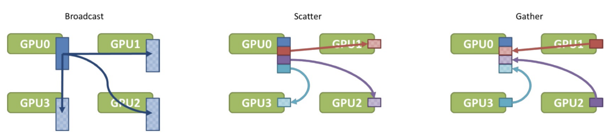</p>
<ul>
<li>Broadcast 는 동일한 값을 다 뿌리는 것</li>
<li>Scatter 는 여러곳에서 데이터를 받아 한곳으로 모으는 것</li>
<li>Gather 는 반대로 데이터를 쪼개 여러곳으로 뿌리는 것</li>
</ul>
<h3 id="all-gather">All-Gather<a aria-hidden="true" tabindex="-1" href="#all-gather" class="internal"> §</a></h3>
<p>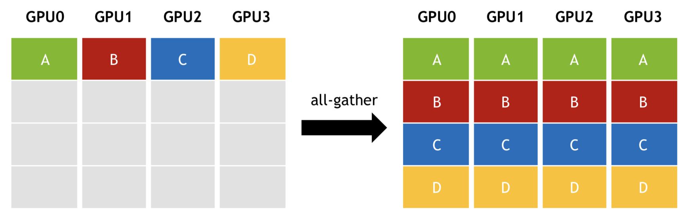</p>
<ul>
<li>는 Gather 를 하되 그 결과를 모든 놈이 동일한 copy 를 갖게 하는 것</li>
</ul>
<h3 id="all-to-all">All-to-All<a aria-hidden="true" tabindex="-1" href="#all-to-all" class="internal"> §</a></h3>
<p>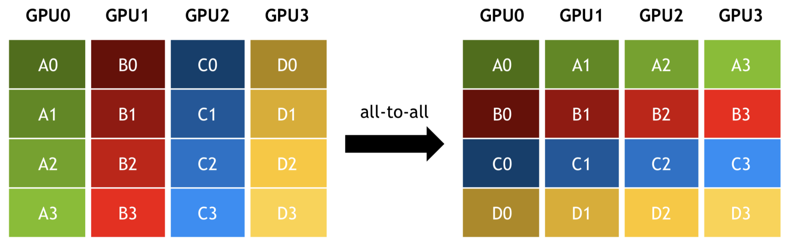</p>
<ul>
<li>는 transpose 와 같이 행렬의 X, Y 축을 반전시키는 것</li>
</ul>
<h3 id="reduce-all-reduce">Reduce, All-Reduce<a aria-hidden="true" tabindex="-1" href="#reduce-all-reduce" class="internal"> §</a></h3>
<p>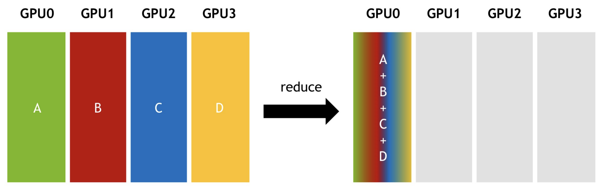</p>
<ul>
<li>Reduce 는 여러 놈의 데이터를 <a href="../../../../../gardens/arch/originals/shpc.fall.2024.cse.snu.ac.kr/drafts/06/Reduction-(Arch)" class="internal" data-slug="gardens/arch/originals/shpc.fall.2024.cse.snu.ac.kr/drafts/06/Reduction-(Arch)">Reduce</a> 해서 한 놈한테 모으는 것</li>
</ul>
<p>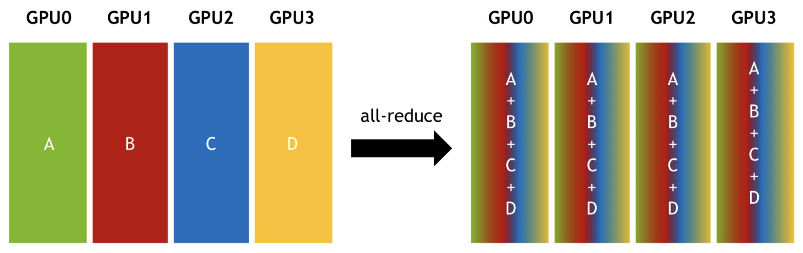</p>
<ul>
<li>All-Reduce 는 Reduce 한 것을 모든 놈이 동일한 copy 를 갖게 하는 것이다.</li>
</ul></article></div><div class="right sidebar"><div class="graph "><h3>Graph View</h3><div class="graph-outer"><div id="graph-container" data-cfg="{&quot;drag&quot;:true,&quot;zoom&quot;:true,&quot;depth&quot;:1,&quot;scale&quot;:1.1,&quot;repelForce&quot;:0.5,&quot;centerForce&quot;:0.3,&quot;linkDistance&quot;:30,&quot;fontSize&quot;:0.6,&quot;opacityScale&quot;:1,&quot;showTags&quot;:true,&quot;removeTags&quot;:[]}"></div><svg version="1.1" id="global-graph-icon" xmlns="http://www.w3.org/2000/svg" xmlnsXlink="http://www.w3.org/1999/xlink" x="0px" y="0px" viewBox="0 0 55 55" fill="currentColor" xmlSpace="preserve"><path d="M49,0c-3.309,0-6,2.691-6,6c0,1.035,0.263,2.009,0.726,2.86l-9.829,9.829C32.542,17.634,30.846,17,29,17
	s-3.542,0.634-4.898,1.688l-7.669-7.669C16.785,10.424,17,9.74,17,9c0-2.206-1.794-4-4-4S9,6.794,9,9s1.794,4,4,4
	c0.74,0,1.424-0.215,2.019-0.567l7.669,7.669C21.634,21.458,21,23.154,21,25s0.634,3.542,1.688,4.897L10.024,42.562
	C8.958,41.595,7.549,41,6,41c-3.309,0-6,2.691-6,6s2.691,6,6,6s6-2.691,6-6c0-1.035-0.263-2.009-0.726-2.86l12.829-12.829
	c1.106,0.86,2.44,1.436,3.898,1.619v10.16c-2.833,0.478-5,2.942-5,5.91c0,3.309,2.691,6,6,6s6-2.691,6-6c0-2.967-2.167-5.431-5-5.91
	v-10.16c1.458-0.183,2.792-0.759,3.898-1.619l7.669,7.669C41.215,39.576,41,40.26,41,41c0,2.206,1.794,4,4,4s4-1.794,4-4
	s-1.794-4-4-4c-0.74,0-1.424,0.215-2.019,0.567l-7.669-7.669C36.366,28.542,37,26.846,37,25s-0.634-3.542-1.688-4.897l9.665-9.665
	C46.042,11.405,47.451,12,49,12c3.309,0,6-2.691,6-6S52.309,0,49,0z M11,9c0-1.103,0.897-2,2-2s2,0.897,2,2s-0.897,2-2,2
	S11,10.103,11,9z M6,51c-2.206,0-4-1.794-4-4s1.794-4,4-4s4,1.794,4,4S8.206,51,6,51z M33,49c0,2.206-1.794,4-4,4s-4-1.794-4-4
	s1.794-4,4-4S33,46.794,33,49z M29,31c-3.309,0-6-2.691-6-6s2.691-6,6-6s6,2.691,6,6S32.309,31,29,31z M47,41c0,1.103-0.897,2-2,2
	s-2-0.897-2-2s0.897-2,2-2S47,39.897,47,41z M49,10c-2.206,0-4-1.794-4-4s1.794-4,4-4s4,1.794,4,4S51.206,10,49,10z"></path></svg></div><div id="global-graph-outer"><div id="global-graph-container" data-cfg="{&quot;drag&quot;:true,&quot;zoom&quot;:true,&quot;depth&quot;:-1,&quot;scale&quot;:0.9,&quot;repelForce&quot;:0.5,&quot;centerForce&quot;:0.3,&quot;linkDistance&quot;:30,&quot;fontSize&quot;:0.6,&quot;opacityScale&quot;:1,&quot;showTags&quot;:true,&quot;removeTags&quot;:[]}"></div></div></div><div class="toc desktop-only"><button type="button" id="toc"><h3>Table of Contents</h3><svg xmlns="http://www.w3.org/2000/svg" width="24" height="24" viewBox="0 0 24 24" fill="none" stroke="currentColor" stroke-width="2" stroke-linecap="round" stroke-linejoin="round" class="fold"><polyline points="6 9 12 15 18 9"></polyline></svg></button><div id="toc-content"><ul class="overflow"><li class="depth-0"><a href="#performance-factors-for-hw" data-for="performance-factors-for-hw">Performance factors for HW</a></li><li class="depth-0"><a href="#gpu-overview" data-for="gpu-overview">GPU overview</a></li><li class="depth-0"><a href="#rendering" data-for="rendering">Rendering</a></li><li class="depth-0"><a href="#shader" data-for="shader">Shader</a></li><li class="depth-1"><a href="#architecture-for-general-purpose-cpu" data-for="architecture-for-general-purpose-cpu">Architecture for general purpose CPU</a></li><li class="depth-1"><a href="#shader-core" data-for="shader-core">Shader core</a></li><li class="depth-1"><a href="#thread-warp" data-for="thread-warp">Thread, Warp</a></li><li class="depth-0"><a href="#predicated-execution" data-for="predicated-execution">Predicated execution</a></li><li class="depth-0"><a href="#context-switch" data-for="context-switch">Context switch</a></li><li class="depth-0"><a href="#streaming-multiprocessor-sm" data-for="streaming-multiprocessor-sm">Streaming Multiprocessor, SM</a></li><li class="depth-0"><a href="#gpu-summary" data-for="gpu-summary">GPU Summary</a></li><li class="depth-0"><a href="#direct-memory-access-dma" data-for="direct-memory-access-dma">Direct Memory Access (DMA)</a></li><li class="depth-1"><a href="#dma-cache-coherence" data-for="dma-cache-coherence">DMA cache coherence</a></li><li class="depth-0"><a href="#remote-direct-memory-access-rdma" data-for="remote-direct-memory-access-rdma">Remote Direct Memory Access (RDMA)</a></li><li class="depth-0"><a href="#gpu-direct" data-for="gpu-direct">GPU Direct</a></li><li class="depth-0"><a href="#collective-communication-library-ccl" data-for="collective-communication-library-ccl">Collective Communication Library (CCL)</a></li><li class="depth-1"><a href="#broadcast-scatter-gather" data-for="broadcast-scatter-gather">Broadcast, Scatter, Gather</a></li><li class="depth-1"><a href="#all-gather" data-for="all-gather">All-Gather</a></li><li class="depth-1"><a href="#all-to-all" data-for="all-to-all">All-to-All</a></li><li class="depth-1"><a href="#reduce-all-reduce" data-for="reduce-all-reduce">Reduce, All-Reduce</a></li></ul></div></div><div class="backlinks "><h3>Backlinks</h3><ul class="overflow"><li><a href="../../../../../gardens/arch/originals/shpc.fall.2024.cse.snu.ac.kr/(SNU-CSE)-Scalable-High-Performance-Computing" class="internal">(SNU CSE) Scalable High-Performance Computing</a></li><li><a href="../../../../../gardens/arch/originals/shpc.fall.2024.cse.snu.ac.kr/drafts/09/Central-Processing-Unit,-CPU-(Arch)" class="internal">Central Processing Unit, CPU (Arch)</a></li><li><a href="../../../../../gardens/arch/originals/shpc.fall.2024.cse.snu.ac.kr/drafts/09/Collective-Communication-Library,-CCL-(Arch)" class="internal">Collective Communication Library, CCL (Arch)</a></li><li><a href="../../../../../gardens/arch/originals/shpc.fall.2024.cse.snu.ac.kr/drafts/09/GPU-Direct-(Arch)" class="internal">GPU Direct (Arch)</a></li><li><a href="../../../../../gardens/arch/originals/shpc.fall.2024.cse.snu.ac.kr/drafts/09/Graphic-Processing-Unit,-GPU-(Arch)" class="internal">Graphic Processing Unit, GPU (Arch)</a></li><li><a href="../../../../../gardens/arch/originals/shpc.fall.2024.cse.snu.ac.kr/drafts/09/Remote-Direct-Memory-Access,-RDMA-(Arch)" class="internal">Remote Direct Memory Access, RDMA (Arch)</a></li><li><a href="../../../../../gardens/arch/originals/shpc.fall.2024.cse.snu.ac.kr/drafts/09/Rendering-(Arch)" class="internal">Rendering (Arch)</a></li><li><a href="../../../../../gardens/arch/originals/shpc.fall.2024.cse.snu.ac.kr/drafts/09/Shader-(Arch)" class="internal">Shader (Arch)</a></li><li><a href="../../../../../gardens/arch/originals/shpc.fall.2024.cse.snu.ac.kr/drafts/09/Streaming-Multiprocessor,-SM-(Arch)" class="internal">Streaming Multiprocessor, SM (Arch)</a></li></ul></div></div></div><footer class><hr/><p>Created with <a href="https://quartz.jzhao.xyz/">Quartz v4.1.0</a>, © 2024</p><ul><li><a href="https://github.com/haeramkeem">GitHub</a></li><li><a href="www.linkedin.com/in/haeram-kim-277404220">LinkedIn</a></li><li><a href="mailto:haeram.kim1@gmail.com">Email</a></li></ul></footer></div></body><script type="application/javascript">// quartz/components/scripts/quartz/components/scripts/callout.inline.ts
function toggleCallout() {
  const outerBlock = this.parentElement;
  outerBlock.classList.toggle(`is-collapsed`);
  const collapsed = outerBlock.classList.contains(`is-collapsed`);
  const height = collapsed ? this.scrollHeight : outerBlock.scrollHeight;
  outerBlock.style.maxHeight = height + `px`;
  let current = outerBlock;
  let parent = outerBlock.parentElement;
  while (parent) {
    if (!parent.classList.contains(`callout`)) {
      return;
    }
    const collapsed2 = parent.classList.contains(`is-collapsed`);
    const height2 = collapsed2 ? parent.scrollHeight : parent.scrollHeight + current.scrollHeight;
    parent.style.maxHeight = height2 + `px`;
    current = parent;
    parent = parent.parentElement;
  }
}
function setupCallout() {
  const collapsible = document.getElementsByClassName(
    `callout is-collapsible`
  );
  for (const div of collapsible) {
    const title = div.firstElementChild;
    if (title) {
      title.removeEventListener(`click`, toggleCallout);
      title.addEventListener(`click`, toggleCallout);
      const collapsed = div.classList.contains(`is-collapsed`);
      const height = collapsed ? title.scrollHeight : div.scrollHeight;
      div.style.maxHeight = height + `px`;
    }
  }
}
document.addEventListener(`nav`, setupCallout);
window.addEventListener(`resize`, setupCallout);
</script><script type="module">
          import mermaid from 'https://cdn.jsdelivr.net/npm/mermaid/dist/mermaid.esm.min.mjs';
          const darkMode = document.documentElement.getAttribute('saved-theme') === 'dark'
          mermaid.initialize({
            startOnLoad: false,
            securityLevel: 'loose',
            theme: darkMode ? 'dark' : 'default'
          });
          document.addEventListener('nav', async () => {
            await mermaid.run({
              querySelector: '.mermaid'
            })
          });
          </script><script src="https://cdn.jsdelivr.net/npm/katex@0.16.7/dist/contrib/copy-tex.min.js" type="application/javascript"></script><script src="https://www.googletagmanager.com/gtag/js?id=G-N68CCP1QHG" type="application/javascript"></script><script src="../../../../../postscript.js" type="module"></script></html>